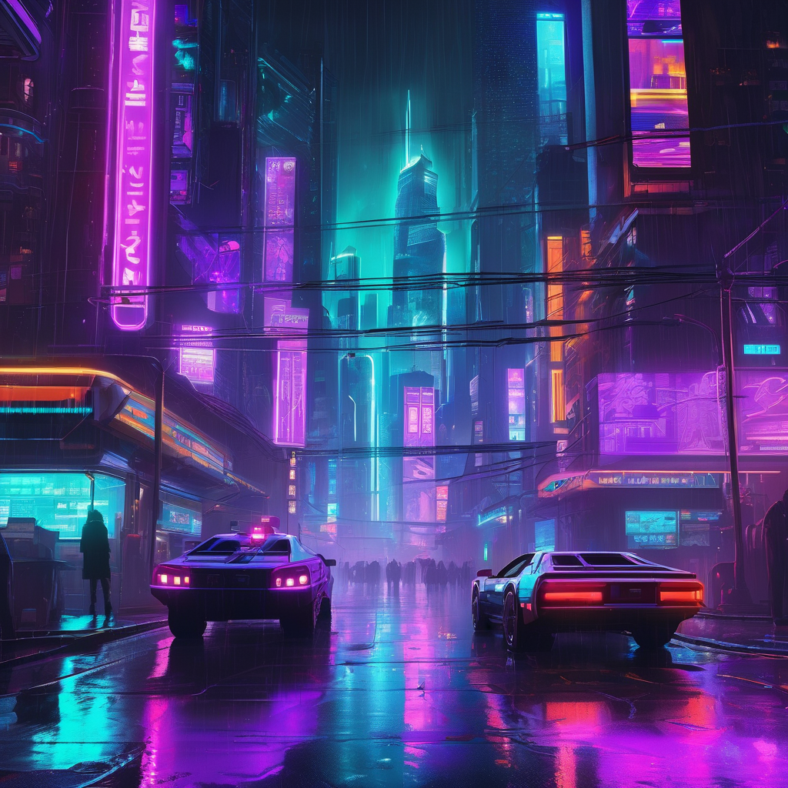
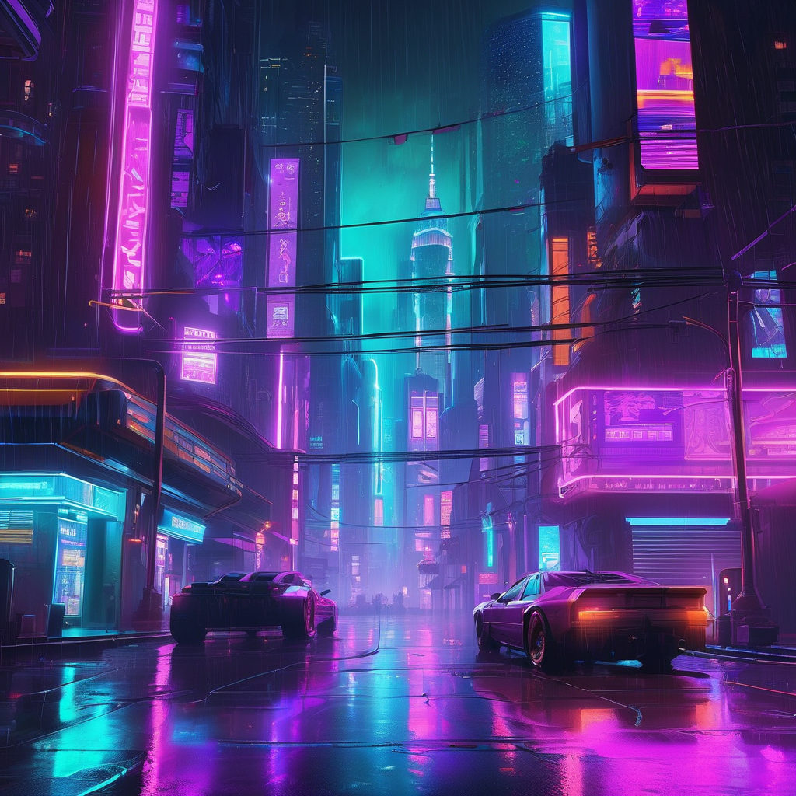
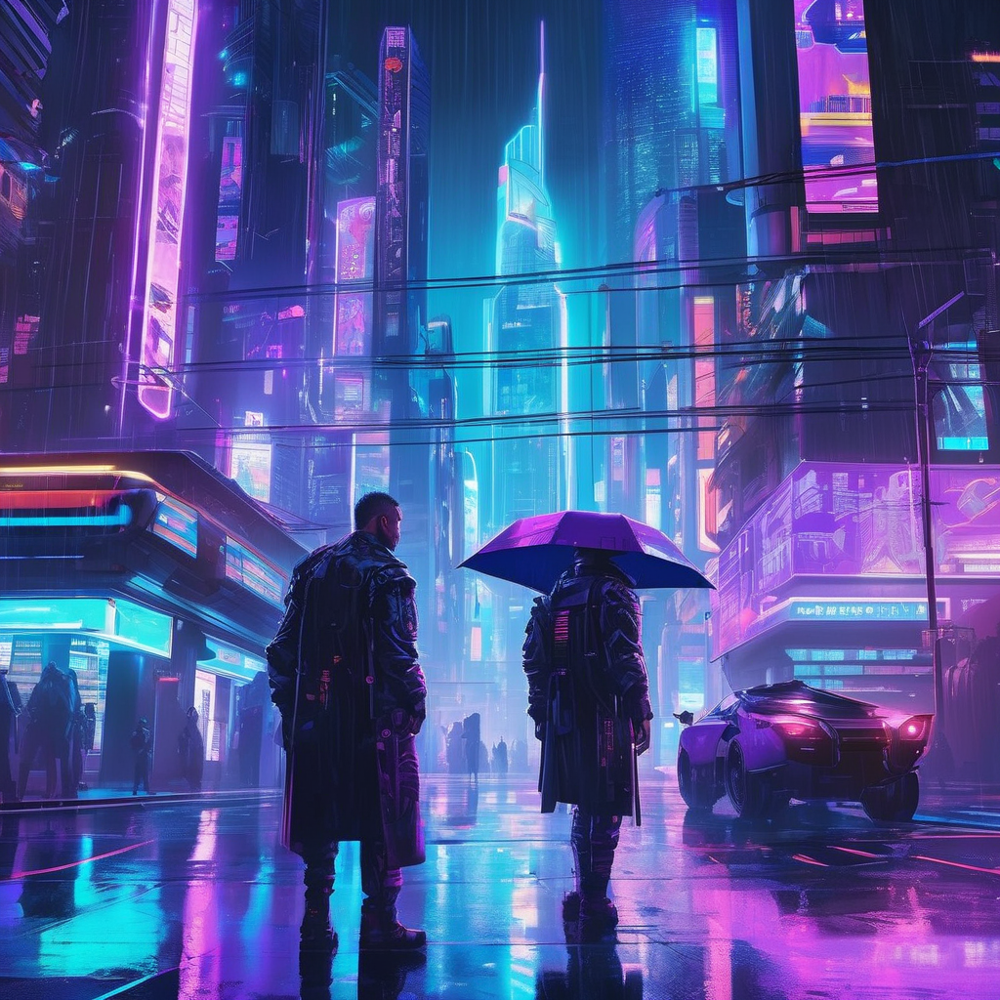

多模态大模型原理与应用 · 课程大作业期末结题报告
SDXL + ControlNet-Canny + IP-Adapter · 三模态协同可控生成 · 消费级GPU全流程适配
agenda.md
// problem-statement
纯文本生成的空间布局高度随机，无法满足海报版面结构的精确需求——主题位置、文字区域、视觉层次全凭"运气"。
❌ 随机布局色彩调性、纹理肌理等视觉风格要素难以通过自然语言精确描述——"暖色调"可能有100种解释，生成结果与预期偏差大。
🎨 语义歧义人物面部、手部等高频细节区域易出现扭曲变形——这是潜在扩散模型在低维表示中高频信息损失的直接后果，严重影响商业可用性。
🧩 高频损失文本（语义）、布局（空间）、风格（视觉）三种异构模态如何在潜在空间有效融合，是多模态可控生成的核心难题。
🔗 异构融合system-design · architecture
五大核心模块构成模块化流水线，三模态输入经独立预处理后在SDXL UNet内部实现互不冲突的潜在空间融合。
control-strategy · weak-constraint
条件权重 0.15--0.55，远低于默认值 1.0。
通过 CLIP ViT-H 提取风格嵌入，仅引入约 3% 参数。
# ControlNet: 像素/空间层面的结构约束 if layout_image: control_image = canny_preprocess(layout_image) result = pipe(image=control_image, controlnet_conditioning_scale=0.55) # IP-Adapter: 语义/风格层面的外观调制 if style_image: pipe.load_ip_adapter("h94/IP-Adapter") pipe.set_ip_adapter_scale(0.40) # 两者控制维度天然正交 → 联合使用且效果互补
engineering · memory-optimization
SDXL + ControlNet + IP-Adapter 完整加载需求 >20 GB → 优化后峰值仅 11--13 GB
所有模型以 float16 加载，显存占用直接减半
torch.float16非活跃组件常驻CPU，仅推理时按需迁移至GPU——最关键的单顶优化
enable_model_cpu_offload将大尺寸图像分块编解码，大幅削减VAE峰值显存
slicing + tilingevaluation · experiment-design
Group ControlNet IP-Adapter CN IP G1 —— —— 0.0 0.0 G2 ✓ —— 0.55 0.0 G3 —— ✓ 0.0 0.40 G4 ✓ ✓ 0.55 0.40
results · qualitative-analysis
行：四个测试主题 | 列：G1纯文本 → G2+ControlNet → G3+IP-Adapter → G4完整系统
🏮 古风美人

🌃 赛博朋克


G2 改善构图规范性 | G3 改善色彩协调性 | G4 综合两者优势：构图+色彩最佳平衡
results · quantitative-metrics
Avg CLIP Score ↑
G4 vs G1: +12.2%
Avg Aesthetic ↑
G4 vs G1: +24.7%
主观美观度 ↑
G4 vs G1: +51.9%
FID vs G1 ↓
分布重塑（正向）
# G4增益 ≈ G2增益 + G3增益（线性叠加） G2 (+ControlNet): +4.6% CLIP, +10.6% Aes G3 (+IP-Adapter): +7.9% CLIP, +14.8% Aes G2+G3 (理论叠加): +12.5% CLIP, +25.4% Aes G4 (实际测量): +12.2% CLIP, +24.7% Aes # → 布局与风格控制在CLIP语义空间中 # 具有近似正交的贡献维度！
G4增益（12.2%）≈ G2增益（4.6%）+ G3增益（7.9%）= 12.5%。
布局与风格控制维度互不干扰，协同增效。
G4的FID最高（3.47）说明分布重塑程度最大——但这是正向重塑（G4在所有指标上均为最优）。高FID ≠ 质量差。
赛博朋克提升最小（+11.0%），青绿山水提升最大（+14.9%）——抽象传统画风对多模态控制最敏感。
// key-takeaways
首次将ControlNet布局控制与IP-Adapter风格控制统一整合至SDXL海报生成流水线——文本+布局+风格三种异构模态协同可控。
ControlNet权重降至0.15–0.55——在提供有效构图引导的同时保留SDXL的艺术创造力，避免"填色画"僵化。
CPU卸载+VAE切片/瓦片+FP16——将>20GB模型压缩至16GB VRAM，单张1024×1024生成仅需15–25秒。
16组实验（4主题×4条件组）× 3类指标（CLIP Score/FID/美学启发式）+ 主观评测，全面量化多模态控制贡献。
实验证明布局与风格控制在语义空间中近似正交——G4增益≈G2增益+G3增益，两者互不干扰、协同增效。
核心引擎 + Gradio WebUI + 评测工具链 + 16组实验结果 + 结题报告——从理论设计到工程部署的完整实践方案。
conclusion · future-work
LLM增强 → Canny检测 → ControlNet布局注入 → IP-Adapter风格注入 → SDXL去噪
CN=0.15–0.55 有效引导构图+保留创造力
CPU卸载+VAE切片+FP16 → 峰值11–13GB
CLIP +12.2% · Aesthetic +24.7% · 主观 +51.9%
GlyphControl / TextDiffuser → 海报标题文字可控生成
古风/水墨/赛博/极简/波普LoRA库 → WebUI实时切换
LCM-LoRA / SDXL-Turbo → 推理步数25→4–8步，近实时交互
InstructPix2Pix范式 → 支持局部修改与迭代精炼
构图参考A + 色彩参考B → 更精细的独立控制
图文驱动的个性化封面与海报生成系统
SDXL + ControlNet + IP-Adapter
Questions & Discussion